Many machines · One server you run
Every machine,
one screen
Fleet is a server you install yourself. Devices enroll with one command, each into its own isolated repository, and the dashboard answers the only question that matters: is everything protected right now?
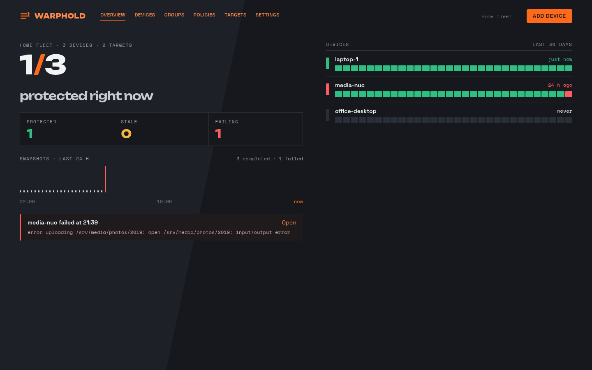
Install
One command, then five steps in the browser
Run this on the machine that will be the Fleet server — a small VM or a spare box is plenty. It verifies the signed checksum, creates the service user and directories, writes a systemd unit, starts the server, and prints the URL and a one-time setup token.
curl -fsSL https://get.warphold.com/fleet.sh | sh
The server binds to the LAN and expects a reverse proxy in front of it; the script prints what the proxy has to pass through. Read the script first — it is a release asset in the same repository as the binary.
- 1Open the printed URL and paste the setup token. You choose the sealing passphrase here; it encrypts every secret the server stores. Write it down — nobody can reset it for you.
- 2Create the first admin account.
- 3Confirm the public URL. The server fetches its own status through it before the step passes, so enrollment can only start once devices can actually reach it.
- 4Choose where the backups live — the Fleet server's own disk, with an optional offsite mirror, or straight through to a cloud bucket.
- 5Copy the enrollment command for your first group and run it on a device.
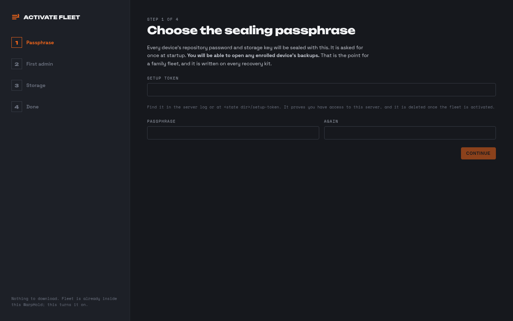
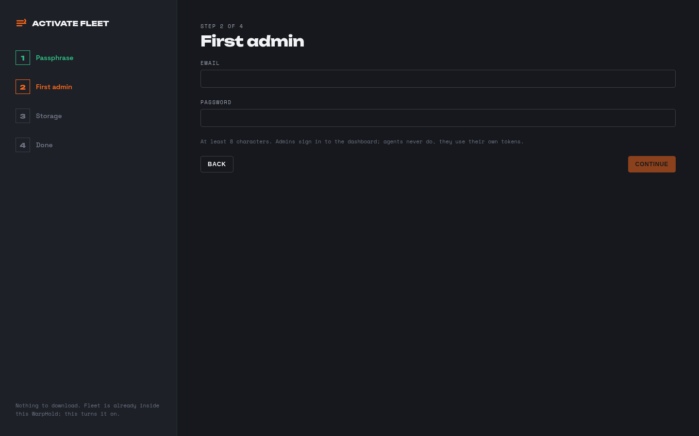
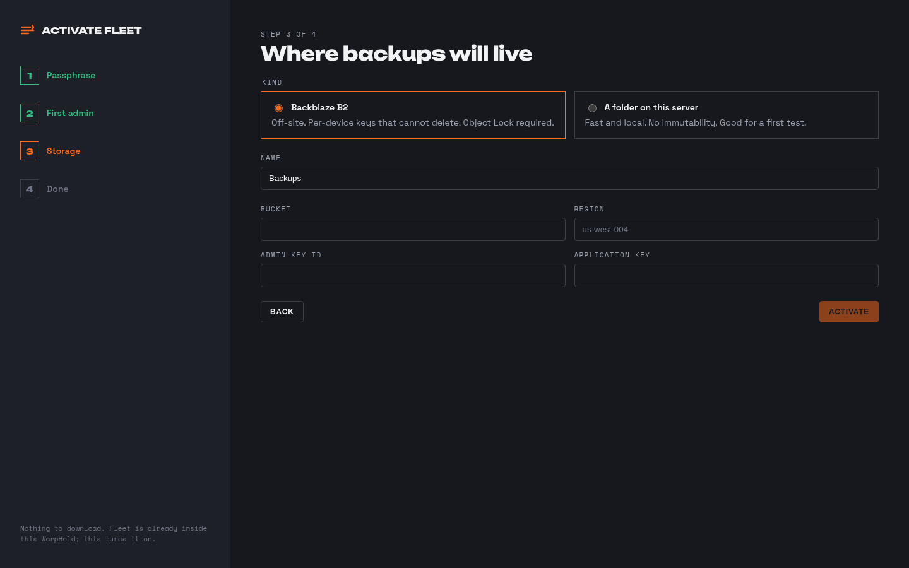
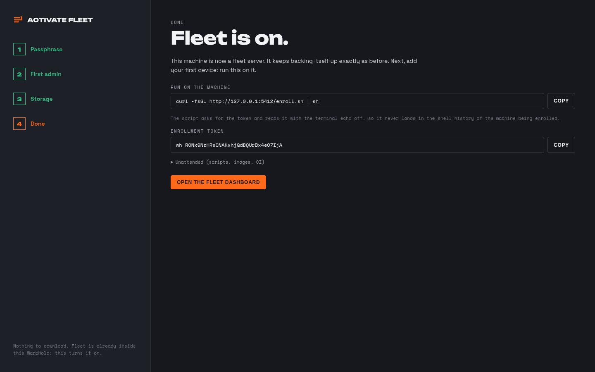
Enrollment
A device joins with one command
Each group issues a one-shot token and shows the command to run on the new machine. The device gets its own repository, its own repository password and its own storage key, and picks up the group's policy template and storage target on the way in. Revoke a device and its key stops working immediately; its backups stay for the retention window you set.
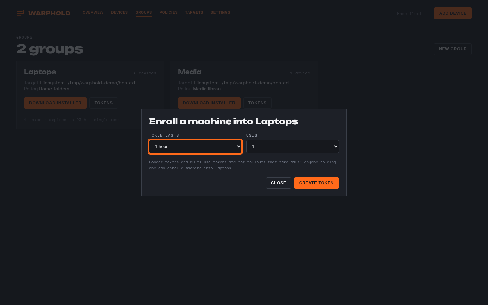
Devices
Every machine, its group and its last good backup
The device list is the roll call: group, health, last successful snapshot, size. Open one and you get its sources, its recent runs, its 30-day strip, and the commands an admin can send it — back up now, verify, or run a test restore.
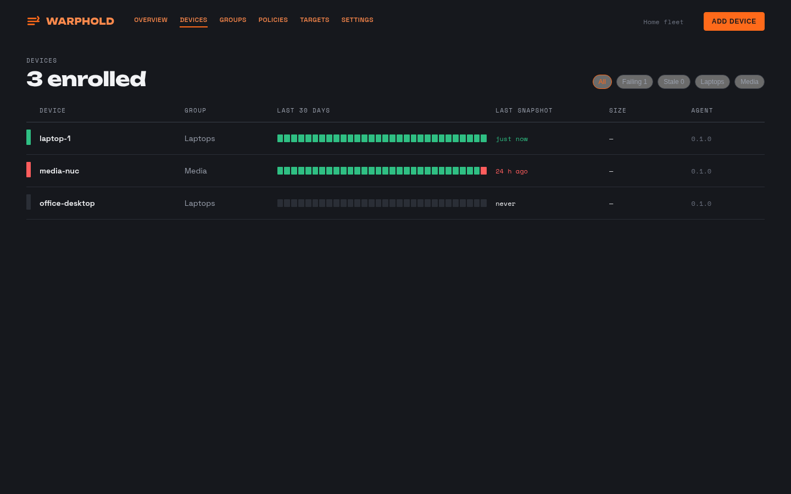
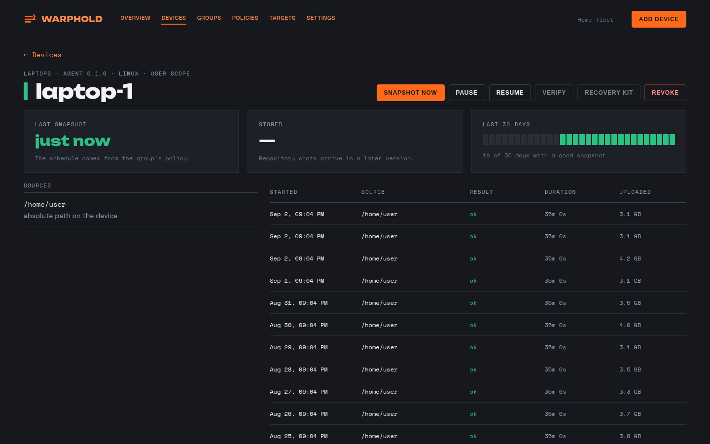
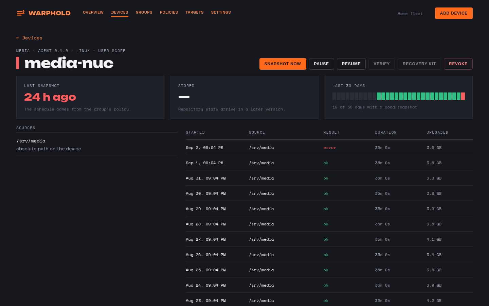
Groups, policies and targets
Set it once for a group, not once per machine
A group ties a policy template to a storage target. A policy template says what to back up, how often and how long to keep it. A target says where it goes. Change the template and every device in the group follows on its next poll.
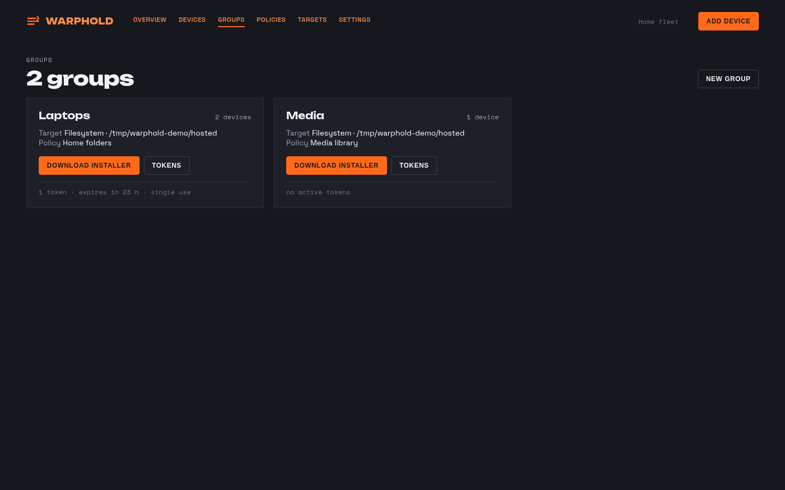
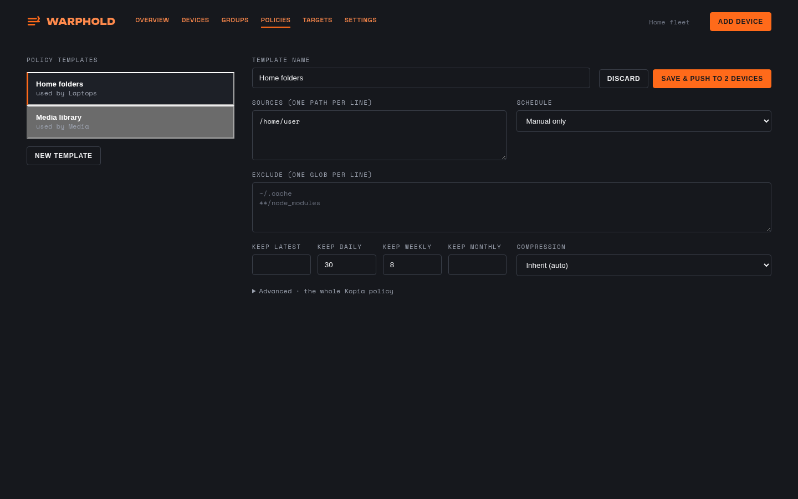
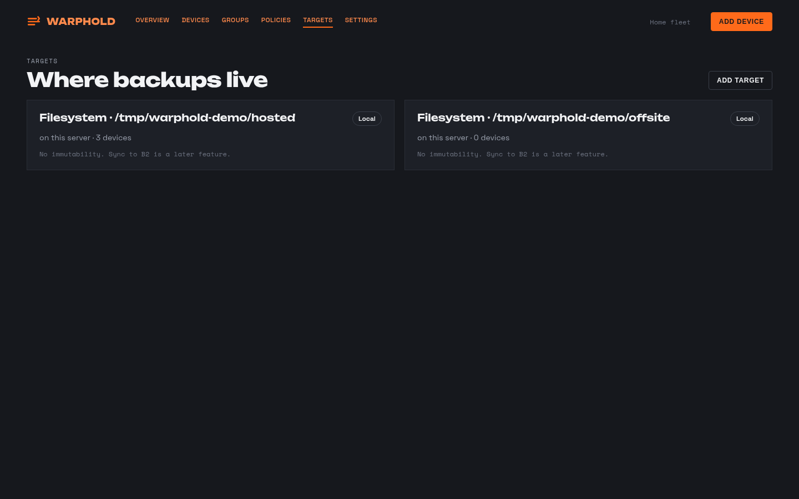
Isolation and security
One device cannot reach another device's backups
A repository per device
Every device gets its own Kopia repository with its own random password. No key, no repository and no content index is shared between devices, so a compromised laptop exposes exactly one machine's data.
Append-only gateway
Devices write through the Fleet server's S3-compatible gateway with a key scoped to their own prefix. The gateway allows only the writes a backup actually needs; a device cannot delete or overwrite its own history, let alone anyone else's.
Object Lock offsite
The offsite copy is written under Object Lock, and Fleet verifies the bucket is really configured for it before it calls a target healthy. Nothing WarpHold runs can delete a locked object before its retention expires.
Sealing passphrase
Every secret the server stores — repository passwords, storage keys, the SMTP password — is sealed with a key derived from a passphrase you set at activation and can rotate later. The server cannot recover it and neither can we.
Devices hold no cloud credentials
In both storage modes the cloud keys stay on the Fleet server. A device only ever holds a gateway key scoped to its own prefix, which you can revoke in one click.
A recovery kit per device
One printable page per device: where its repository is, its password, read-only credentials, and the literal commands to restore with a stock kopia binary. Fleet is never required for a restore — a test in CI fails the build if it ever becomes required.
Storage
Your disk, the cloud, or both
- AFleet disk. Devices back up to the Fleet server's own storage. Fast on a LAN, no cloud bill, and the data stays in the building.
- BFleet disk plus an offsite mirror. A scheduled job copies each device's blobs to a B2 bucket under Object Lock. The mirror only ever gains objects, so it survives anything that happens to the server.
- CCloud-direct. The gateway writes straight through to an S3-compatible bucket with the fleet's own key. No local copy to size, and still no cloud credentials on any device.
The targets screen shows local and offsite health separately, so "the backup ran" and "the offsite copy is current" are two different green ticks.
Settings and reporting
The parts you set once
Fleet name, public URL, poll interval, admin accounts, SMTP, and the schedules for the background jobs: verify, test restore, maintenance, and the mirror. A weekly digest emails you per-device health, fleet totals, any un-acknowledged recovery kit, and any job that has been failing for more than a week.
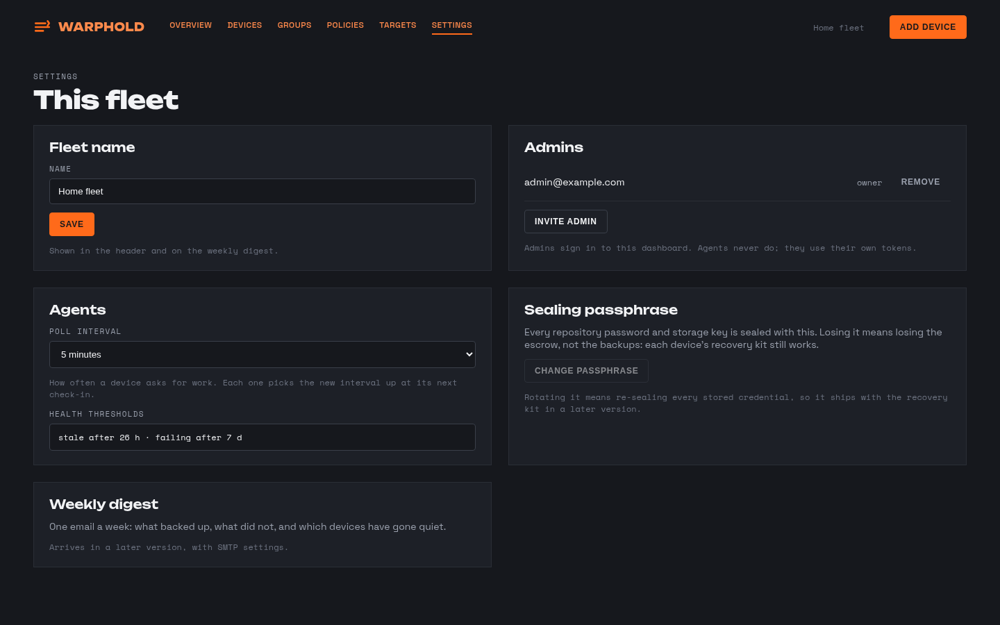
On a phone
The same dashboard, in your hand
Every screen is built for a 412 px viewport, not shrunk into one. Checking whether the house is protected from a phone takes one tap.
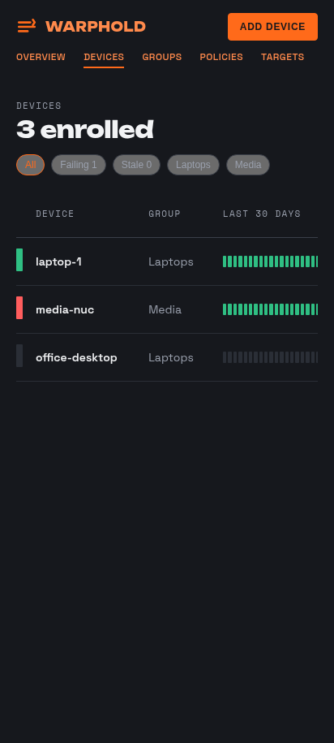
Scale
Built for a thousand devices
The gateway is stateless: no process, no connection and no session per device — one signature check, one key lookup from an in-memory cache, one storage operation. A thousand devices taking hourly snapshots is roughly 55 writes a second fleet-wide, and each device gets its own rate limit so a runaway machine slows itself down instead of the fleet. It is designed to run on hardware you already own.